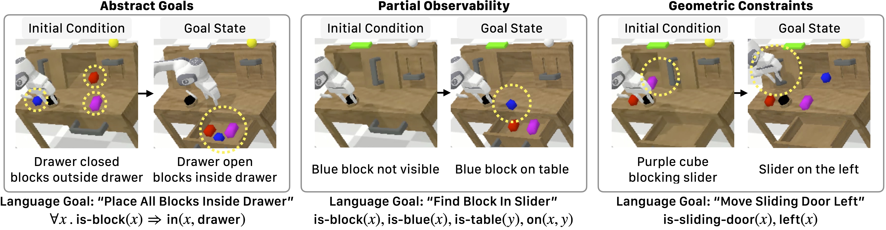
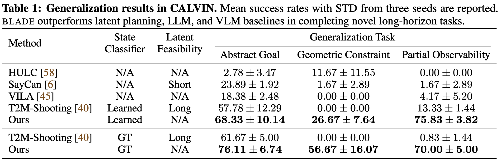

We introduce Behavior from Language and Demonstration (BLADE), a framework for long-horizon robotic
manipulation by integrating imitation learning and model-based planning.
BLADE leverages language-annotated demonstrations, extracts abstract action knowledge from large language
models (LLMs), and constructs a library of structured, high-level action representations.
These representations include preconditions and effects grounded in visual perception for each high-level
action, along with corresponding controllers implemented as neural network-based policies.
BLADE can recover such structured representations automatically, without manually labeled states or
symbolic definitions.
BLADE shows significant capabilities in generalizing to novel situations, including novel initial states,
external state perturbations, and novel goals.
We validate the effectiveness of our approach both in simulation and on a real robot with a diverse set of
objects with articulated parts, partial observability, and geometric constraints.
Overview of BLADE
(a) BLADE receives language-annotated human demonstrations,
(b) segments demonstrations into contact primitives, and learns a structured behavior representation.
(c) BLADE can generalizes to novel initial conditions, leveraging bi-level planning and execution to achieve
goal states.
Behavior Descriptions Learning
Starting with human demonstrations with language annotations, BLADE
segments the demonstrations into contact primitives
such as close-gripper, and push. Then, BLADE generates operators using an LLM, defining actions with
specific preconditions and effects. These operators allow for automatic predicate annotation based on the
preconditions and effects. The segmented demonstrations also provide data for training visuomotor policies for individual skills.
Real-World Results
We evaluate BLADE on four generalization tasks: unseen initial conditions, human perturbations,
geometric constraints, and partial observability.
Here are examples from the four generalization tasks in three different real-world environments.
Real-World Kitchen Setting
Real-World Tabletop Setting | Boil Water
Real-World Tabletop Setting | Make Tea
Generalization Results in Simulation
We evaluate BLADE on three generalization tasks in simulation:
abstract goals, partial observability, and geometric constraints. Here are examples from
the three generalization tasks in the CALVIN simulation environment.
Successfully completing these tasks require planning for and executing 3-7 actions.

We compare BLADE with two groups of baselines: hierarchical policies
with
planning in latent spaces and LLM/VLM-based methods for robotic planning.
For the former, we use HULC, the SOTA method in CALVIN, which learns a hierarchical policy from
language-annotated play data using hindsight labeling.
For the latter, we use SayCan, Robot-VILA, and Text2Motion. Since Text2Motion assumes access to ground-truth
symbolic states, we compare Text2Motion with BLADE in two settings: one with the ground-truth states and the
other with the state classifiers learned by BLADE.

Acknowledgments
This work is in part supported by Analog Devices, MIT Quest for Intelligence,
MIT-IBM Watson AI Lab, ONR Science of AI, NSF grant 2214177, ONR N00014-23-1-2355,
AFOSR YIP FA9550-23-1-0127, AFOSR grant FA9550-22-1-0249, ONR MURI N00014-22-1-2740,
ARO grant W911NF-23-1-0034.
We extend our gratitude to Jonathan Yedidia, Nicholas Moran, Zhutian Yang, Manling Li,
Joy Hsu, Stephen Tian, Chen Wang, Wenlong Wang, Yunfan Jiang, Chengshu Li, Josiah Wong,
Mengdi Xu, Sanjana Srivastava, Yunong Liu, Tianyuan Dai, Wensi Ai, Yihe Tang,
the members of the Stanford Vision and Learning Lab, and the anonymous reviewers for
insightful discussions.
BibTeX
@inproceedings{liu2024BLADE,
title = {BLADE: Learning Compositional Behaviors from Demonstration and Language},
author = {Liu, Weiyu and Nie, Neil and Zhang, Ruohan and Mao, Jiayuan and Wu, Jiajun},
booktitle = {CoRL},
year = {2024}
}